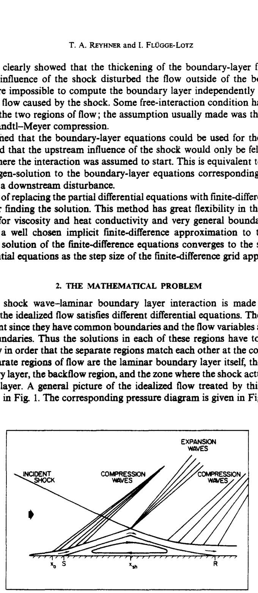
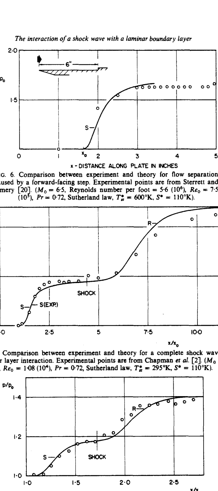
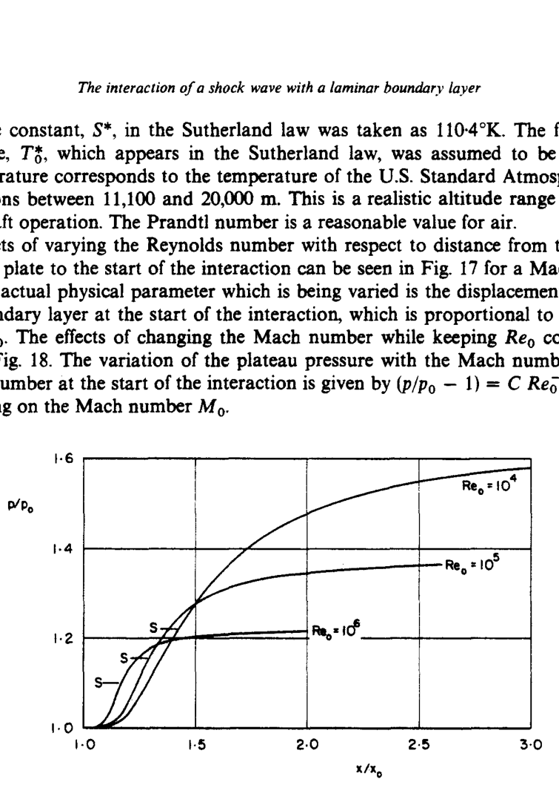
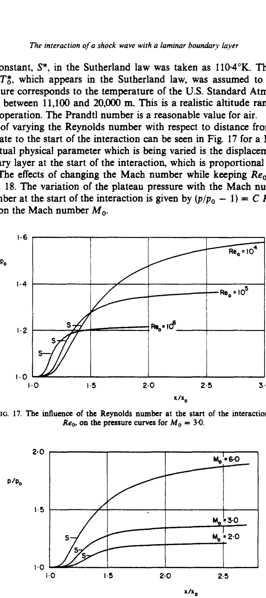

01中文摘要
给出入射激波与平板层流边界层干扰的有限差分解。用边界层方程计算流动，外部压力由Prandtl-Meyer公式确定；讨论两种计算分离区的方法，并与实验比较，结果吻合良好。文中确定黏性与热传导关系对计算结果的影响，给出马赫数和干扰起始处边界层位移厚度对压力分布的作用，并分别考虑绝热壁与给定壁温的平板。
02阅读说明
依据 deep_input/794.md 全文（1369 行，27 页，含图件清单与带页码 OCR 文本）精读；公式(2.9a)–(3.8)已对照原 PDF 第 5–6、13、23 页核验。bundle 的 OCR 质量较差（字符误识、上下标丢失），部分表值与符号按上下文可辨；关键量不确定处已注明。图件清单存在编号/类型标注错位（例如 tab04_p16 实为 Table 3、fig11_p21 的图注实为正文、fig15_p24/fig16_p24 的图注为正文段落），figures 字段按要求原样保留清单中的 file/n/page。 文章类型：期刊
03一句话核心与三句话摘要
用可压缩层流边界层方程耦合 Prandtl–Meyer 外流，有限差分求解激波/边界层干扰，由下游相容条件定激波强度。
- 论文把二维定常可压缩层流边界层方程与 Prandtl–Meyer 外流压缩关系耦合，用隐式有限差分沿平板下游推进，计算入射斜激波与层流边界层的完整干扰，包括分离和回流。 原文明确
- 回流区中 pu<0 使抛物型方程的下游推进失稳；作者在全有限差分法中删除 pu∂u/∂x 与 pu∂T/∂x，并加入 0.1|pu| 的人工对流项，另用四次多项式积分法作对照，但积分法在壁面传热时不稳定。 原文明确
- 固定相互作用起点 x0 与激波位置 xsh 后，调节激波强度使下游 dp/dx 与 d²p/dx² 同时趋于零，从而闭合三参数问题；计算的压力分布与 Chapman、Sterrett–Emery、Hakkinen、Gadd–Holder 等实验总体吻合，但激波入射点下游较差。 AI概括
04核心内容清单
| 要点 | 类型 | 重要性 | 原文依据 | 属性 |
|---|---|---|---|---|
| 研究目标：对二维平板激波/层流边界层干扰求一个对广泛流体物性适用、可包含分离的近似解。 | 研究目标 | A | p173–174，第 1 节 | 原文明确 |
| 控制方程为二维定常可压缩层流边界层方程(2.9a–d)，外缘用 Prandtl–Meyer 压缩(2.11)(2.12)与无粘关系(2.13)闭合。 | 模型 | A | p177–178，第 2.2 节 | 原文明确 |
| 边界层外缘由速度/温度梯度容差确定；位移厚度增厚通过外缘法向速度反馈到无粘外流，形成自由干扰。 | 耦合机制 | A | p178、p180，第 2.2.2、2.5 节 | 原文明确 |
| 采用隐式有限差分沿 x 推进，x 动量/能量方程与连续方程取不同配点，连续方程隐式处理是稳定计算的关键改进。 | 数值方法 | A | p182–185，第 3.2–3.3 节 | 原文明确 |
| 回流区 pu<0 使推进失稳；全有限差分法删除 pu∂u/∂x、pu∂T/∂x，必要时加 0.1|pu| 人工对流，积分法则用四次多项式剖面。 | 回流处理 | A | p181–182，第 3.1 节；p178–179，第 2.2.3 节 | 原文明确 |
| 激波通过在 xsh 处对外缘法向速度施加间断引入；x0、xsh、激波强度三参数中两个已知，第三个由下游相容条件确定。 | 闭合策略 | A | p180–181，第 2.5 节 | 原文明确 |
| 下游相容条件为 dp/dx 与 d²p/dx² 同时趋于零；计算中通过夹逼 ve,sh+ 并平顺压力曲线实现。 | 闭合条件 | A | p181、p192，第 2.5、4.4 节 | 原文明确 |
| 理论压力分布与 Chapman、Sterrett–Emery、Hakkinen 等实验总体吻合；仅用分离点压力拟合 x0，平台压力仍独立吻合。 | 验证 | A | p188–189，第 4.3 节，Figs 5–8 | 原文明确 |
| 激波入射点下游吻合较差，可能因该区法向压力梯度显著。 | 偏差 | B | p188，第 4.3 节 | 原文明确 |
| 粘性/导热律对压力升高和平台压力影响小，对边界层厚度、壁温、壁面剪应力影响明显；M0=2 时部分参数差可达约 20%。 | 敏感性 | B | p187–188，表 1–3 | 原文明确 |
| Re0 与 M0 是最重要参数；平台压力近似满足 (P/P0−1)=C Re0^0.215，C 依赖 M0。 | 参数相关 | B | p195，第 4.5 节，Figs 17–18 | 原文明确 |
| PM 外流闭合要求激波前后外缘均为超声速，排除正激波；亚声速外流的椭圆性使压力-角度关系不通用，是主要适用边界。 | 局限 | A | p197–198，第 5 节 | 原文明确 |
05引言：研究问题与领域缺口
第 1 节（p173–174）提出：对激波/层流边界层干扰寻找一个对广泛流体物性都较准确、可用的解析或计算方法，并取最简单情形——二维平板流动，干扰区上游和下游均为零压力梯度。早期工作以实验为主；此前的积分法（Honda、Makofski 的多项式剖面，Lees–Reeves 的相似剖面，Nielsen 等对顺流/回流分别取剖面）多假设 Pr=1、μ∝T。作者指出，有限差分法无需这些限制，可采用任意粘性/导热律和一般边界条件。纹影与压力测量表明边界层增厚会改变外流，必须建立自由干扰条件把内外流耦合；通常假设外流为 Prandtl–Meyer 压缩。作者进一步假设边界层方程仍适用，激波的上游影响只体现在“相互作用起点”的选择上，相当于边界层方程存在一类特征解；并用有限差分法求解。
06流动条件与几何构型
| 项目 | 数值/描述 | 依据 | 备注 |
|---|---|---|---|
| 流动与几何构型 | 二维定常、可压缩、层流平板边界层；干扰区上游和下游均为零压力梯度；入射斜激波与边界层相交 | p173–174，第 1 节；p175，第 2 节，Fig. 1–2 | 全文假定层流；若干扰结束前发生转捩，干扰性质会显著改变 |
| 气体模型 | 完全气体、比热为常数；γ=1.4（空气） | p179，第 2.3.1 节，式(2.16) | 采用完全气体是为简化方程并控制计算时间 |
| Prandtl 数 | 主算例 Pr=0.72（空气）；对比算例 Pr=1.0 | p179，式(2.18)；p187–188，表 1–3 | 假设 Pr 为常数；作者强调空气的 Pr≈0.72 而非 1 |
| 粘性律 | 主算例 Sutherland 律，S*=110°K（部分参数算例写 110.4°K），T∞=216.65°K；对比算例线性律 μ∝T | p179，式(2.17)；p187–188，表 1–3；p190，Fig. 9 图注 | Sutherland 律更接近空气真实粘性；线性律在高马赫数会带来较大误差 |
| 壁面热边界条件 | 绝热壁 ∂T/∂y=0，或给定壁温 T(x,0)=Tw；Gadd–Holder 对比取 Tw/T0=5.7 | p177，式(2.10)；p196，Fig. 19 图注 | 绝热壁温计算值约为初始自由流温度的 2.5 倍；Fig. 20 中绝热曲线标为 Tw/To=2.52 |
| 主参数算例 | M0=3.0、Re0=10⁵、xsh/x0=3.0（Figs 9、11–18 的基准算例） | p190–195，Figs 9、13–18 | Re0 为以平板前缘到相互作用起点距离定义的雷诺数 |
| 实验对比工况（Chapman 等，前向台阶） | M0=3.5，ReL=0.65×10⁶，Reθ=2.4×10⁵，Pr=0.72，Sutherland 律，T*=295°K，S*=110°K；台阶高度 1/27.7 L，位于 x=L | p183，Fig. 5 图注 | 用前向台阶产生的分离流补充激波干扰实验数据；作者强调流动必须全程层流 |
| 实验对比工况（Chapman 等） | M0=2.4，Reθ=1.08×10⁴，Pr=0.72，Sutherland 律，T*=295°K，S*=110°K | p189，Fig. 7 图注 | 完整激波/层流边界层干扰 |
| 实验对比工况（Hakkinen 等） | M0=2.0，Reθ=1.65×10⁵，Pr=0.72，Sutherland 律，T*=295°K，S*=110°K | p187，Fig. 8 图注（清单 fig05_p17.png） | 完整激波/层流边界层干扰 |
| 实验对比工况（Sterrett–Emery，前向台阶） | M0=6.5，每英尺雷诺数 5.6×10⁶，Reθ=7.5×10⁵，Pr=0.72，Sutherland 律，T*=600°K，S*=110°K | p189，Fig. 6 图注 | 0.25 in 前向台阶置于 x*=6 in；用台阶干扰补充高马赫数实验数据 |
| 实验对比工况（Gadd–Holder，加热壁） | M0=3.0，每英寸雷诺数 1.92×10⁵，Reθ≈6×10⁵，Tw/T0=5.7，Pr=0.72，Sutherland 律，T*=290°K，S*=110°K | p196，Fig. 19 图注 | 实验物体只是近似平板，且实测位移厚度与平板相似解有偏差 |
| 外流假定 | 边界层外缘为无粘、无热传导、等熵 Prandtl–Meyer 压缩；激波前后外缘均为超声速 | p175–178，第 2.2.2 节，式(2.11)–(2.13)；p197，第 5 节 | 该假定排除了正激波，也限制了亚声速外流的处理 |
| 数值网格与误差 | y 方向 30 个网格点；x 步长可变；较大步长下最大误差约 5%；每步约 0.5 s，单次运行约 5 min；激波强度通常迭代约 5 次 | p185，第 3.5 节；p186，第 4 节 | 作者称收敛性证明超出本文范围，但计算未显示收敛困难 |
| 回流区处理 | pu<0 时在全有限差分方程中删除 pu∂u/∂x、pu∂T/∂x；必要时以 0.1|pu| 的人工对流项替代；仅在 ys/δ*>6 的算例需要 | p181–182，第 3.1 节 | 积分法（四次多项式）作为对照，仅对绝热流可用；壁面传热时不稳定 |
| 下游相容条件 | 要求 dp/dx 与 d²p/dx² 在干扰下游同时趋于零 | p181，第 2.5 节 | 用于在 x0、xsh、激波强度三参数中确定未知的第三个 |
| 激波强度参数 | 以外缘法向速度 ve,sh+ 表征；Fig. 11 算例约在 −0.10 至 −0.14 之间，中心曲线取 −0.115 | p191–192，Figs 11–13 | 实际计算中变化该参数直至满足下游相容条件 |
| 研究类型与验证数据 | 数值理论 + 文献实验对比；文中未提及本文开展新的风洞实验 | p186–196，第 4 节 | 对比数据来自 Chapman 等、Sterrett–Emery、Hakkinen 等、Gadd–Holder、Gadd |
| 壁面剪应力可信度 | 回流区壁面剪应力因近似较多，作者认为可能不很准确；再附前负剪应力峰值原因不明，实验无相应测量 | p192–193，Fig. 15 及正文 | 这是结果解释中的明确保留 |
07核心现象与关键参数
| 参数 | 定义 | 数值 | 关系/说明 | 依据 |
|---|---|---|---|---|
| M0 | 相互作用起始处的外缘马赫数 | 基准 3.0；比较算例包括 2.0、2.4、3.5、6.0、6.5 | 影响平台压力与压力分布；Fig. 18 给出 M0=1.5–6.0 的曲线 | p190–196，Figs 9–19 |
| Re0 | 以平板前缘到相互作用起点距离（或 L*）为参考长度的雷诺数 | 基准 10⁵；对比 1.65×10⁵、2.4×10⁵、7.5×10⁵、6×10⁵、1.08×10⁴ 等 | 平台压力近似 (P/P0−1)=C Re0^0.215 | p176，第 2.1.2 节；p195，第 4.5 节 |
| Reθ | 基于动量厚度的雷诺数 | 各图注给出；例如 1.08×10⁴、1.65×10⁵、2.4×10⁵、7.5×10⁵、6×10⁵，Fig. 21 算例为 10³ | 通过初始剖面和边界层厚度影响干扰 | p176，式(2.5)；p186–196 各图注 |
| L* | 无量纲化参考长度 | 取平板前缘到相互作用起点或激波入射点的距离 | x=x*/L*，y=y*/L* 等 | p175，第 2.1 节 |
| x0 | 相互作用起点（无量纲） | 算例中作为可调参数；与 xsh、激波强度三者知二求一 | 越靠近前缘，达到同一激波位置所需激波越强（Fig. 9） | p181，第 2.5 节；p190，第 4.4 节 |
| xsh | 理想化激波与边界层外缘相交位置（无量纲） | 基准算例 xsh/x0=3.0 | 固定激波强度时改变 xsh 会改变压力曲线（Fig. 10） | p181，第 2.5 节；p191，Fig. 11 |
| ve,sh+ | 激波后边界层外缘法向速度，用作激波强度参数 | 约 −0.10 至 −0.14；示例 −0.115 | 与激波角和偏转角的关系见 Fig. 12；用于迭代满足下游相容条件 | p191–192，Figs 11–12 |
| Δφ | 入射激波加反射膨胀波使外流线转过的总角度 | 由 ve,sh+、ve,sh− 与 ue 计算 | Δφ=arctan(ve,sh+/ue)−arctan(ve,sh−/ue) | p185，式(3.8) |
| dp/dx | 壁面/外缘压力梯度（无量纲） | 表 3 中为 0.00576/0.00685/0.00805（三种物性组合）；下游要求趋于零 | 由式(3.6)(3.7)结合 PM 关系计算 | p185，式(3.6)(3.7)；p188，表 3 |
| P/P0 | 当地压力与来流/初始压力之比 | 分离平台约 1.1–1.2；完整干扰下游可达约 1.5–2.0，取决于 M0 与 Re0 | 平台压力 (P/P0−1)=C Re0^0.215 | p189–195，Figs 7–18 |
| δ*、θ* | 边界层位移厚度与动量厚度（无量纲） | 表 1（M0=2.0, Rex=10⁵）：δ*=0.01050/0.01081/0.01148；θ*=0.002018/0.002009/0.002100 | 按式(2.4)(2.5)积分速度/密度剖面 | p176，式(2.4)(2.5)；p187，表 1 |
| ys | 分离点/分离区边界位置（文中以边界层内 u=0 的位置描述） | 表 3 在 x/x0=2.0 时约 0.0301/0.0281/0.0271；Fig. 13 随激波强度变化 | 回流区宽度以 ys/δ* 衡量，最大算例约 6.8 | p188，表 3；p186，第 4.1 节；p192，Fig. 13 |
| τw | 无量纲壁面剪应力 | 表 3 回流区为负：−0.0000898/−0.0000990/−0.0001117 | 由式(2.7)定义；再附前出现较大负峰值，原因不明 | p177，式(2.7)；p188 表 3；p193 Fig. 15 |
| q | 无量纲壁面传热 | 分离干扰下显著降低；恒温壁相似解 q∝1/√Rex | 由式(2.8)定义 | p177，式(2.8)；p196，Fig. 21 |
| Tw/T0 | 壁温与总温（或参考温度）之比 | 绝热算例壁温约 2.5 倍初始自由流温度；Gadd–Holder 实验 Tw/T0=5.7 | 影响密度比、粘性与传热 | p196，第 4.6 节，Figs 19–20 |
| Pr | Prandtl 数 | 0.72（空气）或 1.0（对比） | 式(2.9c)(2.18) | p177–179，式(2.9c)(2.18) |
| S* | Sutherland 粘性律常数 | 110°K 或 110.4°K | 式(2.17) | p179，式(2.17)；各图注 |
| γ | 比热比 | 1.4 | 状态方程(2.16)、PM 关系(2.11) | p179，式(2.16) |
| C | 平台压力相关式中的马赫数相关常数 | 依赖 M0；文中未给出具体数值 | (P/P0−1)=C Re0^0.215 | p195，第 4.5 节 |
08方法与数据
第 2–3 节（p174–186）建立数学模型与数值方法。采用无量纲化，参考长度 L* 取平板前缘到相互作用起点或激波入射点的距离；控制方程为二维定常可压缩层流边界层方程(2.9a–d)：x 动量、∂p/∂y=0、能量和连续方程，壁面条件(2.10)为 u=v=0，绝热 ∂T/∂y=0 或给定壁温。外缘用 Prandtl–Meyer 压缩关系(2.11)(2.12)及无粘、无热传导的动量/能量关系(2.13)，在粘性项可忽略处与边界层解匹配。分离/回流区另给出积分方程(2.14a–c)与四次多项式剖面条件(2.15)作为对照方法。气体用完全气体状态方程(2.16)、线性或 Sutherland 粘性律(2.17)、常数 Pr(2.18)。初始剖面由 Crocco 方程生成的平板零压梯度相似解给出，可处理绝热或恒壁温。数值上采用隐式有限差分：x 动量与能量方程写在 (m+½,n)，连续方程写在 (m+½,n−½)，以保持二阶精度并避免奇偶振荡；非线性项用外推/迭代线性化(3.2)(3.3)，差分商见(3.1a–e)，连续方程见(3.4a,b)，差分方程见(3.5a–c)，用三对角递推求解。边界层外缘由 ∂u/∂y、∂T/∂y 小于预设容差确定。激波入射通过在 xsh 处对外缘法向速度 ve 施加间断实现，间断对应激波加反射膨胀波的总转折角 Δφ（式3.8）；压力梯度由(3.6)(3.7)计算。x0、xsh、激波强度三参数中已知两个，第三个用试凑满足下游相容条件。
| 项目 | 内容 | 依据 | 备注 |
|---|---|---|---|
| 研究设计 | 以可压缩层流边界层方程 + Prandtl–Meyer 外流闭合，有限差分沿 x 推进求解完整激波/边界层干扰；用文献实验压力分布验证；用参数算例考察物性、Re、M、壁温影响 | p173–175，第 1–2 节；p186–196，第 4 节 | 无新实验；属于数值理论工作 |
| 控制方程 | 二维定常可压缩层流边界层方程(2.9a–d)：x 动量、∂p/∂y=0、能量、连续；壁面 u=v=0，绝热或给定壁温(2.10) | p177，第 2.2.1 节 | 边界层近似，忽略法向动量方程中的高阶项 |
| 外流闭合 | 外缘采用 Prandtl–Meyer 压缩关系(2.11)(2.12)，并以无粘、无热传导的动量/能量关系(2.13)描述外缘流动；在粘性项可忽略处与边界层解匹配 | p177–178，第 2.2.2 节 | 外缘位置由 ∂u/∂y、∂T/∂y 小于容差确定；ve 的取值位置误差为 δ* 量级 |
| 回流区积分法（对照） | 对边界层方程沿 y 积分得(2.14a–c)，用四次多项式剖面并施加壁面条件(2.15)，在 y=yr 处与有限差分解的函数及一、二阶导数匹配 | p178–179，第 2.2.3 节 | 仅对绝热流得到可用解；壁面传热时不稳定 |
| 气体物性 | 完全气体状态方程(2.16)、线性或 Sutherland 粘性律(2.17)、常数 Pr(2.18) | p179，第 2.3 节 | 采用更精确物性公式只会使差分公式更复杂 |
| 初始剖面 | 用 Crocco 方程重新编程，生成平板零压梯度、任意粘性律的相似解，覆盖绝热壁与恒壁温 | p179–180，第 2.4 节 | 作为 x=x0 的启动剖面 |
| 边界层外缘处理 | 外缘由 ∂u/∂y 与 ∂T/∂y 小于预设容差判定；外缘应用式(2.11)–(2.13)后可向下游推进 | p180，第 2.5 节 | 作者指出边界层方程本身允许压力升高并最终分离，无需人为扰动启动 |
| 激波引入 | 在假想激波与边界层外缘相交处，把外缘法向速度 ve 作间断突变；这等效于指定入射激波加反射膨胀波的总转折角，从而间接指定激波强度 | p180–181，第 2.5 节 | 激波与反射膨胀波局部结构被忽略，激波位置在一定范围内不确定（Fig. 4） |
| 三参数闭合 | x0、xsh、激波强度三参数中已知两个，第三个用试凑；以 dp/dx 与 d²p/dx² 同时趋于零的下游相容条件判定 | p181，第 2.5 节 | 实际算例固定 x0、xsh，变化激波强度；作者指出工程上更可能已知激波强度和位置、调整 x0 |
| 有限差分离散 | x 动量与能量方程写在 (m+½,n)，连续方程写在 (m+½,n−½)，采用式(3.1a–e)差分商；非线性项用外推(3.2)(3.3)线性化；差分方程为(3.5a–c)，用三对角递推求解 | p182–185，第 3.2–3.3 节 | 连续方程隐式处理是相对前人方法的关键改进；前人用外推 v 计算压力梯度时完全不稳定 |
| 回流区全有限差分处理 | pu<0 时删除 pu∂u/∂x 与 pu∂T/∂x；稳定性不足时以 0.1|pu|∂u/∂x、0.1|pu|∂T/∂x 替代；仅在 ys/δ*>6 时需要 | p181–182，第 3.1 节 | 删除项在回流区本应很小，但大范围回流的累积误差由积分法对照检查 |
| 压力梯度计算 | 由 PM 关系与无粘动量关系导出(3.6)(3.7)；差分中用 ve 在 m±½ 的差值；激波后第一步用激波后 ve 启动 | p185，第 3.3 节 | 激波强度未知时，用该步骤先得到激波后第一步的 dp/dx |
| 实验对比方式 | 变化 x0（从而 Re0）使理论压力曲线在分离点附近拟合实验；未拟合平台压力；平台压力的独立吻合被视为理论有效性的证据 | p188，第 4.3 节 | 激波入射点下游吻合较差，作者归因于法向压力梯度可能显著 |
| 参数研究 | 比较三种粘性/导热组合（表 1–3）；变化 x0、xsh、激波强度（Figs 9–16）；变化 Re0、M0（Figs 17–18）；变化壁温与传热（Figs 19–21） | p186–196，第 4 节 | 多工况逐项给出，未合并 |
| 误差与收敛性 | 步长试验给出最大误差约 5%；作者称有限差分解收敛到偏微分方程解的证明超出本文范围，但计算未显示收敛困难；每步约 0.5 s、30 个 y 网格点 | p185–186，第 3.5、4 节 | 未给出实验数据不确定度或网格收敛阶 |
09核心推导与公式
把边界层方程与外缘 Prandtl–Meyer 压缩关系耦合，沿 x 隐式推进求解完整干扰。边界层的位移效应通过外缘法向速度反馈到无粘外流，形成自由干扰；在激波入射处对外缘法向速度施加间断以引入激波。由于 x0、xsh、激波强度三者不能同时预先给定，采用下游相容条件（dp/dx 与 d²p/dx² 同时趋于零）作为闭合方程。回流区因 pu<0 使抛物型推进在数值上不稳定，故在全有限差分法中删除时间型对流项并加人工对流，另以四次多项式积分法作对照。
关键假设
- 二维定常、可压缩、层流边界层，边界层近似成立，∂p/∂y=0
- 边界层外缘为无粘、无热传导的等熵流动，可用 Prandtl–Meyer 压缩关系描述
- 激波前后外缘流动均为超声速；不考虑正激波
- 完全气体、比热为常数，γ=1.4；Pr 为常数
- 粘性律可用线性律或 Sutherland 律；导热律由常数 Pr 给出
- 壁面 u=v=0；热边界为绝热或给定壁温
- 初始剖面为平板零压梯度相似解（Crocco 方程生成）
- 边界层外缘由速度/温度梯度容差定义；忽略位移厚度量级的细节
- 激波与反射膨胀波的局部结构被理想化为外缘法向速度的间断
- x0、xsh、激波强度中两个已知，第三个由下游相容条件确定
- 回流区可用删除 pu∂u/∂x、pu∂T/∂x（必要时加人工对流）的全有限差分法近似
- 积分法对照采用四次多项式剖面，并在匹配点保证函数及一、二阶导数连续
推导过程
在边界层近似下，二维定常可压缩层流流动由 x 动量、y 动量（给出 ∂p/∂y=0）、能量和连续方程(2.9a–d)描述。壁面取无滑移、无穿透，热边界为绝热或给定壁温(2.10)。
边界层外缘假设为等熵 Prandtl–Meyer 压缩，压力变化与流动偏转角通过式(2.11)联系，其中 φ=arctan(ve/ue)、we²=ue²+ve²（式2.12）。在粘性项可忽略的外缘，流动还应满足无粘、无热传导的动量与能量关系(2.13)；这些关系与 PM 关系、连续方程共同描述外缘。
为处理 u<0 的回流区，作者把边界层方程沿 y 从壁面积分到分离区边界，得到积分形式(2.14a–c)；再用四次多项式构造剖面，并要求壁面处满足式(2.15)的动量/能量平衡条件，在 y=yr 处与有限差分解的函数及一、二阶导数匹配。
采用完全气体状态方程(2.16)、线性或 Sutherland 粘性律(2.17)以及常数 Pr 假定(2.18)，使方程组闭合。
用 y=nΔy、x=x_initial+mΔx 的网格；x 动量与能量方程写在 (m+½,n)，连续方程写在 (m+½,n−½)。差分商按 Taylor 展开构造（式3.1a–e），非线性项用外推值(3.2)或上一轮迭代值(3.3)线性化，函数在半点取平均(3.3)。连续方程用(3.4a,b)的形式，以保持二阶精度并避免奇偶振荡。
把差分商代入(2.9a–d)，得到未知量为 dp/dx|_{m+1}、u_{m+1,n}、T_{m+1,n}、v_{m+½,n} 的线性差分方程(3.5a–c)。连续方程作为隐式方程之一，与前人先由动量/能量方程求 u、T 再用连续方程单独求 v 的做法不同；后者在自由干扰问题中完全不稳定。所得三对角系统用递推关系高效求解。
由 PM 关系与无粘动量关系得到式(3.6)，再用式(2.13)改写为式(3.7)。差分中 ve 的导数取 ve,m+½−ve,m−½；在激波处把 ve 间断为激波后值，程序即自动开始计算激波下游。激波加膨胀波使外流线转过的总角 Δφ 由式(3.8)给出，从而把 ve,sh+ 与激波强度联系起来。
干扰下游应一阶趋于常压流动，因此要求 dp/dx 与 d²p/dx² 同时趋于零，这就是平板情形的下游相容条件。计算中固定 x0 与 xsh，先猜 ve,sh+≈−ve,sh−，再根据压力曲线行为判断猜值偏大或偏小，逐步夹逼；达到精度后把最近激波强度的压力曲线平顺到常压。由于平板解在 PM 关系下本身不稳定，末端需人为平滑。
适用边界：边界层方程为抛物型，真实的上游影响只能通过选择 x0 和特征解假设近似；外流必须是超声速且等熵 PM 压缩，不能处理正激波或一般亚声速外流。激波与反射膨胀波局部结构被简化为 ve 间断，激波位置 xsh 在 Fig. 4 所示范围内不确定。回流区删除 pu∂u/∂x、pu∂T/∂x 属数值稳定化处理，壁面剪应力和再附前负峰值可信度有限；积分法在壁面传热时不稳定。气体为完全气体、常数 Pr，粘性律限于线性或 Sutherland；计算为层流，未考虑转捩。下游相容条件需人为平顺，且平板解在 PM 关系下不稳定；网格仅 30 个 y 点，误差约 5%，收敛性未严格证明。
10结果：主要发现与关键证据
第 4 节（p186–196）给出数值实验与比较。4.1 节：步长试验表明解对步长不敏感，较大步长下最大误差约 5%；全有限差分回流法至少与四次多项式积分法同样准确，且在回流区变宽（ys/δ*=6.8）时更可靠、更简单稳定；积分法在壁面传热时完全不稳定。4.2 节与表 1–3：在 M0=2.0、Re0=10⁵ 下比较 Pr=0.72+Sutherland、Pr=1.0+Sutherland、Pr=1.0+μ∝T 三种物性组合；压力升高与平台压力差别不大，但边界层厚度、壁温与剖面形状差别明显（例如表 1 中 δ* 差 3%–9.3%，θ* 差 0.4%–4.1%，δ*/θ* 形状因子差 5.3%–20%；表 3 中 ys 差 −6.6%/−10%，dp/dx 为 0.00576/0.00685/0.00805）。4.3 节：与 Chapman 等、Sterrett–Emery、Hakkinen 等的实验比较（Figs 5–8），理论对压力升高的预测相当好；理论曲线通过改变 x0（从而 Re0）拟合分离点附近压力，未拟合平台压力，平台压力仍与实验相符。4.4 节：完整干扰的压力曲线随 x0、xsh 变化（Figs 9–10）；相互作用起点越靠近前缘，激波越强；用 ve,sh+ 表征激波强度并迭代满足下游相容条件（Figs 11–12），给出 ys、边界层参数、壁面剪应力与速度剖面（Figs 13–16）。4.5 节：Re0 与 M0 是最重要参数，平台压力近似满足 (P/P0−1)=C Re0^0.215，C 依赖 M0（Fig. 17–18）。4.6 节：与 Gadd–Holder 加热壁实验比较（Fig. 19）；绝热壁温约为初始自由流温度的 2.5 倍；若固定激波强度/压力比而调整 xs，加热与冷却壁的压力曲线差别会相互补偿，实际差别不大（Fig. 20）；分离干扰使壁面传热显著降低（Fig. 21）。
| 发现 | 证据 | 证据类型 | 强度 | 位置 | 属性 |
|---|---|---|---|---|---|
| 可压缩层流边界层方程与 Prandtl–Meyer 外流闭合能够给出激波/层流边界层干扰的近似解，且与实验压力分布总体吻合。 | 第 4.3 节比较 Chapman 等、Sterrett–Emery、Hakkinen 等实验（Figs 5–8），原文称理论对压力升高预测相当好；第 5 节称“The agreement with experiments is remarkable”。 | 核心结论 | 强 | p188，第 4.3 节；p197，第 5 节 | 原文明确 |
| 理论仅用分离点附近压力拟合 x0，未拟合平台压力，但平台压力仍与实验相符，说明理论捕捉到了自由干扰的主要物理。 | 原文明确：“There was no attempt to match the plateau pressures. The fact that the plateau pressures agree with the experimental results is indication of the validity of the theory.” | 验证 | 强 | p188，第 4.3 节 | 原文明确 |
| 理论在激波入射点下游与实验吻合较差，可能因为该区域法向压力梯度显著。 | 原文称“the agreement between theory and experiments is not as good downstream of the shock impingement point”，并引 Ackeret 等指出该区法向压力梯度可能重要。 | 偏差与解释 | 强 | p188，第 4.3 节 | 原文明确 |
| 粘性律与导热律对压力升高和平台压力影响不大，但对边界层厚度、壁温与壁面剪应力影响明显；M0=2.0 时部分参数差异可达约 20%。 | 表 1–3 比较 Pr=0.72+Sutherland、Pr=1.0+Sutherland、Pr=1.0+μ∝T：δ* 差 3%–9.3%，θ* 差 0.4%–4.1%，δ*/θ* 形状因子差 5.3%–20%，ys 差 −6.6%/−10%；压力差仅约 0.1%–2.8%。 | 物性敏感性 | 中 | p187–188，第 4.2 节，表 1–3 | 原文明确 |
| 全有限差分回流法至少与四次多项式积分法同样准确，且在回流区较宽时更可靠、更简单稳定；积分法在壁面传热时不稳定。 | 第 4.1 节在 x/x0=4.4（ys/δ*=6.8）比较两法；原文称“the method using all finite-differences is as accurate if not more so”，并指出积分法受四次多项式限制、传热时完全失败。 | 方法比较 | 中 | p186–187，第 4.1、3.4 节 | 原文明确 |
| 相互作用起点越靠近平板前缘，为在固定 xsh 处满足下游相容条件所需的激波越强；固定激波强度而改变 x0 会显著改变压力曲线。 | Figs 9–10（p190）给出压力比随 Re0 的变化；原文称“the closer the start of the interaction to the leading edge of the plate, the stronger the shock”。 | 参数趋势 | 强 | p190，第 4.4 节，Figs 9–10 | 原文明确 |
| Re0 与 M0 是干扰最重要的两个参数；平台压力近似满足 (P/P0−1)=C Re0^0.215，C 依赖 M0。 | 第 4.5 节与 Figs 17–18；原文明确给出该相关式，并指出粘性律与 Pr 对压力曲线影响小得多。 | 参数相关 | 中 | p195，第 4.5 节，Figs 17–18 | 原文明确 |
| 加热壁与冷却壁的压力曲线在固定壁温算例中差别较大，但若固定激波强度/压力比并相应调整相互作用起点，二者影响会相互抵消，实际压力曲线差别不大。 | Fig. 20 与第 4.6 节讨论；原文称调整 xs 的效应“is of the same order of magnitude and opposite sign of the effect of heating or cooling the wall”，因此会补偿。 | 传热效应 | 中 | p196，第 4.6 节，Fig. 20 | 原文明确 |
| 分离诱导干扰使壁面传热显著降低；绝热壁温计算值约为初始自由流温度的 2.5 倍。 | Fig. 21 显示分离干扰下无量纲传热远低于无干扰平板相似解；第 4.6 节称绝热壁温“about two and one half times the initial free-stream temperature”。 | 传热结果 | 中 | p196，第 4.6 节，Figs 20–21 | 原文明确 |
| 所有算例中激波前后外缘均为超声速，因此排除了正激波；这是 PM 外流闭合的直接限制。 | 第 5 节原文称“In all examples, the exterior flow was supersonic before and after the shock. This rules out the possibility of a normal shock.” | 适用边界 | 强 | p197–198，第 5 节 | 原文明确 |
11机制解释与论证链
入射斜激波在外缘造成逆压梯度，压力扰动通过边界层位移厚度的增厚向上游传播：边界层变厚把外流向外推，外流经 Prandtl–Meyer 压缩转向，压力进一步升高，形成黏性-无粘自由干扰。逆压梯度使近壁流速降低直至壁面剪应力为零并出现回流；回流区使边界层方程的时间型对流项变为负，数值推进失稳，需删除或改造这些项。分离区下游，边界层重新增厚/再附，压力逐渐恢复；下游应回到零压力梯度的平板状态，因此要求 dp/dx 与 d²p/dx² 同时趋于零，这一相容条件决定激波强度。激波强度越大，逆压梯度越强，分离区越宽、平台压力越高；Re0 增大（边界层相对变薄）与 M0 增大会改变平台压力，近似满足 (P/P0−1)=C Re0^0.215。壁面加热/冷却改变密度比、粘性与传热，但若实验固定激波强度/压力比并相应调整相互作用起点，压力曲线的净差别会部分抵消；分离干扰本身使壁面传热显著降低。
12讨论：结论、贡献与局限
第 5 节（p197–198）总结：可压缩边界层方程确实能给出该干扰问题的近似解；考虑到用抛物型方程处理本质上有上游影响的流动，和实验的吻合“remarkable”，说明边界层方程存在某种特征解的原始假设基本正确。所有算例中激波前后外流均为超声速，因而排除了正激波；这是使用 Prandtl–Meyer 压力梯度关系的限制。亚声速流动的本质是椭圆型，压力与外流线角度之间不存在通用关系，而取决于整个亚声速区；若事先能对外流亚声速行为作出假设，也许可近似处理正激波干扰。文中还讨论：激波入射点附近激波与反射膨胀波的局部结构被忽略会带来比较困难；平板解在 PM 关系下并不稳定，需在干扰末端人为平滑到零压梯度；回流区壁面剪应力精度有限，再附前负剪应力峰值原因不明；传热实验数据稀缺，Gadd–Holder 的模型只是近似平板。
作者结论
第 5 节（p197–198）的结论是：可压缩边界层方程确实能给出激波/层流边界层干扰问题的近似解；考虑到用抛物型方程处理本质上依赖激波上游影响的流动，理论与实验的吻合非常显著，说明“边界层方程存在某种特征解”的原始假设基本正确。所有算例中激波前后外流均为超声速，排除了正激波；这一限制来自 Prandtl–Meyer 压力梯度关系。亚声速流动的椭圆型本质意味着压力与外流线角度之间不存在通用关系，而取决于整个亚声速区；如果事先能对亚声速外流行为作出合理假设，也许可以近似处理正激波与层流边界层的干扰。作者还强调，全有限差分回流法比积分法更简单、稳定且至少同样准确。
主要贡献
- 给出二维激波/层流边界层完整干扰（含分离与回流）的隐式有限差分求解框架，将边界层方程与 Prandtl–Meyer 外流闭合。
- 提出并实践用下游 dp/dx 与 d²p/dx² 同时趋零的相容条件确定未知激波强度，闭合 x0、xsh、激波强度三参数问题。
- 系统比较全有限差分回流法与四次多项式积分法，证明前者在宽回流区和壁面传热情形更稳健、更简单。
- 通过参数算例给出 Re0、M0、粘性/导热律、壁温与传热对压力分布、分离区和壁面量的影响，并给出平台压力相关式。
局限与未解决问题
本文为数值理论工作，未开展新实验；验证依赖 Chapman、Sterrett–Emery、Hakkinen、Gadd–Holder 等文献数据，部分实验（如 Gadd–Holder）物体只是近似平板，且实测位移厚度与相似解有偏差。边界层方程为抛物型，真实上游影响仅通过 x0/特征解假设引入；外流必须是超声速等熵 PM 压缩，不能处理正激波或一般亚声速外流。激波与反射膨胀波局部结构被简化，xsh 位置存在不确定性。回流区删除 pu∂u/∂x、pu∂T/∂x 并加人工对流是数值稳定化处理，壁面剪应力精度有限，再附前负剪应力峰值原因不明；积分法在壁面传热时不稳定。气体为完全气体、常数 Pr，粘性律限于线性或 Sutherland；计算为层流，未考虑转捩。下游相容条件需末端平顺，平板解在 PM 关系下不稳定；网格 30 个 y 点、误差约 5%，收敛性未严格证明。传热实验数据稀缺，加热/冷却壁结论主要基于理论补偿论证。
13对高速流动与工程的意义
这是较早的一类完整数值求解激波/层流边界层干扰（含分离与回流）的工作。它表明：在边界层近似下，只需用 Prandtl–Meyer 外流闭合和合适的相互作用起点，就能预测压力升高、平台压力与分离区行为；并系统比较了全有限差分回流法与积分法，指出前者更稳健。论文提出并实践了用下游相容条件确定激波强度的做法，讨论了特征解假设、PM 外流的超声速限制以及亚声速/正激波情形的基本困难，为后续黏性-无粘相互作用方法和分离流计算提供了方法论基础。其对 Re、M、壁温与传热影响的参数研究也具有工程参考价值。
14核心图件




15可引用原文素材
| 原文短句 | 可支持的观点 | 位置 | 使用建议 |
|---|---|---|---|
| “the region of backflow” | 回流区是全有限差分推进失稳的核心区域。 | p182，第 3.1 节 | 问题定义 |
| “compatibility condition” | 下游相容条件用于确定未知的激波强度。 | p181，第 2.5 节 | 闭合条件 |
| “eventual separation” | 边界层方程可直接计算压力升高并最终分离，无需人为扰动。 | p180，第 2.5 节 | 方法优势 |
| “only marginally stable” | 删除回流区对流项后计算仅勉强稳定，需人工对流项。 | p182，第 3.1 节 | 数值限制 |
| “The agreement with experiments” | 理论与实验总体吻合，是全文核心结论。 | p197，第 5 节 | 验证结论 |
| “Prandtl-Meyer compression” | 外流闭合采用 PM 压缩假设，决定了超声速限制。 | p174，第 1 节 | 核心假设 |
| “the plateau pressures agree” | 平台压力未参与拟合却与实验相符，支持理论有效性。 | p188，第 4.3 节 | 验证证据 |
| “shock impingement point” | 激波入射点下游理论与实验吻合较差，是主要偏差区域。 | p188，第 4.3 节 | 偏差定位 |
16最终核验
| 核验项 | 结论 |
|---|---|
| 仅基于全文 | 仅使用 deep_input/794.md 的正文、图注、表格、公式与图件清单，未引入外部知识；图件 file/n/page 原样取自 bundle 图件清单，即使清单存在编号/类型错位也未擅自改动。 |
| A 级要点有依据 | 所有 A 级核心要点均由原文明确语句、表格或图注支撑，并在 source 中给出页码/节号；式(2.9a–d)–(3.8)已对照原 PDF 第 5–6、13、23 页核验。 |
| 属性标注 | three_sentence、findings、core_points 均逐条标注“原文明确/AI概括/AI推断”；推导步骤的 source 指向原文式号/节号，对 OCR 残缺或只保留物理含义的步骤在 note 中说明。 |
| 覆盖范围 | 已分段通读 1369 行 bundle 至 EOF（全文 27 页）；覆盖摘要、引言、数学问题、数值方法、结果与实验比较、讨论与结论、图 1–21 及参考文献中的方法线索。 |
| 无编造 | 未编造页码、图号、公式或实验数据；OCR 残缺处只保留方程编号和物理含义，未补写逐项系数；文中未给出的量写“文中未提及”；不确定处写“受限于材料，无法确认”。 |
需回原文确认
- 回流区删除 pu∂u/∂x、pu∂T/∂x 的累积误差虽用积分法对照检查，但积分法本身受四次多项式限制且在传热时失效，独立误差估计仍不足。
- 再附前壁面剪应力出现较大负峰值，作者明确表示原因不明，实验也没有该区域的剪应力测量；该结果的物理真实性未解决。
- 下游相容条件要求 dp/dx 与 d²p/dx² 同时为零，但平板解在 PM 关系下不稳定，末端需人为平顺；这种平顺对激波强度和分离区长度的影响文中未量化。
- PM 外流假定排除正激波和一般亚声速外流；作者仅提出若事先知道亚声速外流行为也许可近似处理，未给出具体方法。
- 网格仅 30 个 y 方向点，最大误差约 5%，但未给出网格收敛阶或与更细网格的系统比较。
- 加热/冷却壁的“影响相互抵消”结论主要基于理论论证和少量实验，缺乏系统的传热干扰实验验证。
- 平台压力相关式 (P/P0−1)=C Re0^0.215 中 C 依赖 M0，但文中未给出 C(M0) 的具体函数形式或适用范围。
17关联文献
依据标签、板块、构型与作者脉络自动关联，可据此追踪同一问题的前序与后续工作。
18引用格式
选择期刊风格后复制；出处保留原刊名。BibTeX 可直接用于 LaTeX。
引用格式
Reyhner, T. A. & Flügge-Lotz, I. 1968 The interaction of a shock wave with a laminar boundary layer. International Journal of Non-Linear Mechanics. https://doi.org/10.1016/0020-7462(68)90014-0
PDF上传 PDF 并更新本页
本页缺少全文、摘要或图件时，可在浏览器本地补入 PDF。解析完全在本机完成，不上传网络；完成后会更新本页的 PDF 打开链接、原摘要、IMRaD 机器抽取、关键句与含图页面。复杂的公式语义与中文深度解读仍以原文和既有精读记录为准。